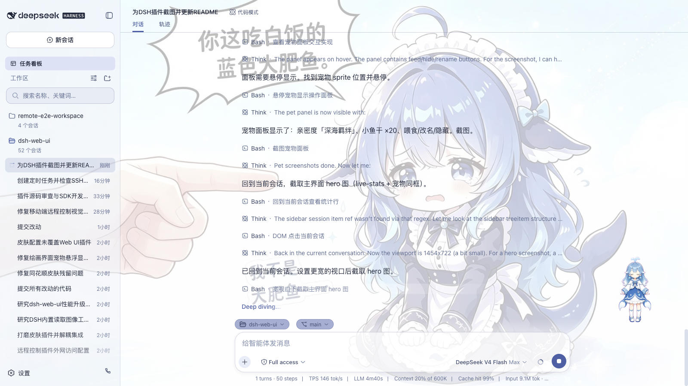
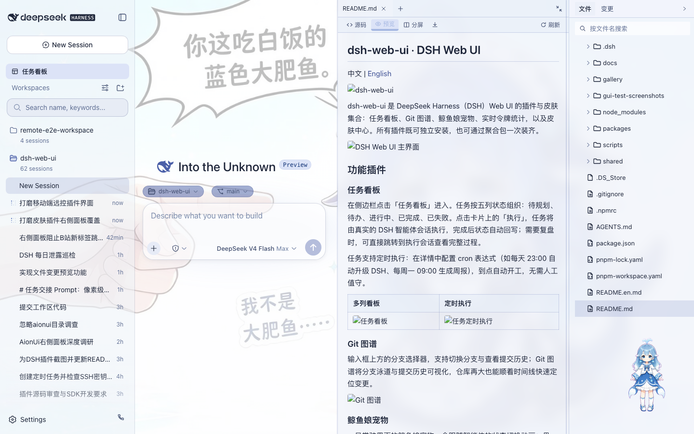
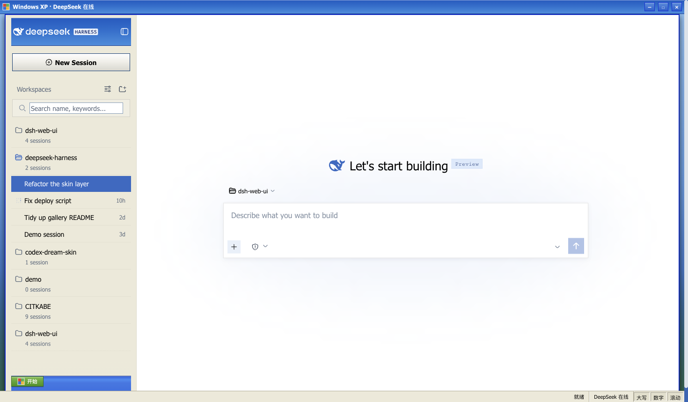
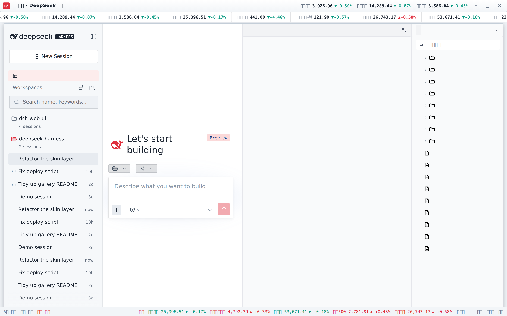

01 / TASKS
任务看板会自己开工
五列状态组织任务，一键交给真实 DSH 会话执行。支持 cron 定时、状态回写与执行会话追溯。
- 看板式工作流
- 定时自动执行
- 完整过程可追溯

原版 Web 能力无损加载，配上原生窗口、自动更新与独立配置。打开应用，就从想法直接进入工作。
DeepSeek Harness Desktop
LOCAL SURFACE / READY
真实产品界面
所有能力均在本地运行
完整 Web Surface不是功能缩水的桌面重写
独立 Desktop Profile不覆盖现有 DSH 配置
内置自动更新新版本确认后安装
DeepSeek Harness Desktop 用安全的 Electron 窗口启动官方 DSH 本地主机，再加载这个项目的全部插件与主题。
你得到的是熟悉的 Harness，也是更适合长期工作的桌面环境：窗口状态会恢复，日志会轮转，崩溃可以重启，更新清晰可控。


任务、代码、文件和远程主机都在同一个上下文里。少切窗口，把注意力留给真正的工作。
五列状态组织任务，一键交给真实 DSH 会话执行。支持 cron 定时、状态回写与执行会话追溯。
分支泳道、提交历史和变更定位收进可视化 Git 图谱，大仓库也能顺着时间线快速阅读。

多标签预览 Markdown、代码、Diff、PDF 与 Office 文件，支持编辑保存以及真实 Git stage 操作。

九款主题全部适配核心插件与右侧面板。先试穿，再应用；浅色、深色与功能状态保持完整。



扫码配对后，在手机上查看工作区、继续会话、切换模型与权限。一次性限时令牌，随时停止并吊销全部设备。


安装包自带官方 DSH、pnpm 与原生依赖，无需另外安装 Node.js。